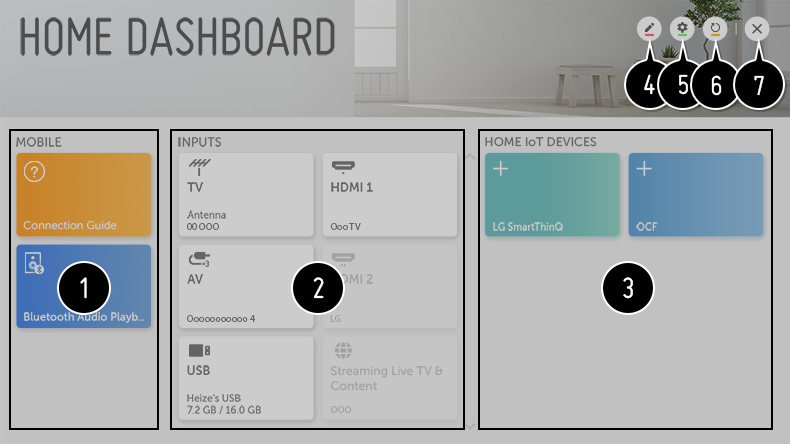

Uso de Panel de casa
Puede seleccionar o controlar un dispositivo (móvil, dispositivo externo, Dispositivos IoT para Home, etc.) conectado a la TV.
Mantenga pulsado el botón del mando a distancia.
del mando a distancia.
Mantenga pulsado el botón
del mando a distancia.

-
Puede comprobar y seleccionar el dispositivo inteligente conectado con LG TV Plus.
Consulte Conexión de otros dispositivos Conexión móvil en la Guía del usuario para ver más información sobre la acción.
Se puede reproducir sonido de un dispositivo inteligente conectado por Bluetooth.
Consulte Conexión de otros dispositivos Reproducción de sonido desde un dispositivo inteligente a través de los altavoces de la TV en la Guía del usuario para ver más información sobre la acción. - Es posible comprobar y seleccionar el dispositivo externo conectado a través del puerto de entrada externo o de la red.
-
Puede comprobar y controlar el dispositivo inteligente conectado mediante Home IoT.
Consulte Conexión de otros dispositivos Uso de Dispositivos IoT para Home en la Guía del usuario para ver más información sobre la acción. -
Se puede editar el nombre o cambiar el icono de un dispositivo conectado a las Entradas.
Es posible editar el nombre de un dispositivo conectado a Dispositivos IoT para Home o PROGRAMA/OCULTAR el dispositivo.Algunos dispositivos no se pueden editar. -
Cuenta LG SmartThinQ
:
Se puede iniciar o cerrar sesión de la cuenta LG SmartThinQ que se ha creado en el móvil.
Conexión de OCF : Si se establece en Encendido, también se vincularán otros dispositivos compatibles con OCF aparte de los productos de LG SmartThinQ.
Aviso : Si lo pone en Encendido, podrá recibir notificaciones sobre el estado del Dispositivos IoT para Home.
Conector de dispositivo : Puede iniciar la aplicación Conector de dispositivo. - También actualiza la lista de dispositivos.
- Salga de Panel de casa.
Los elementos configurables varían según el modelo.